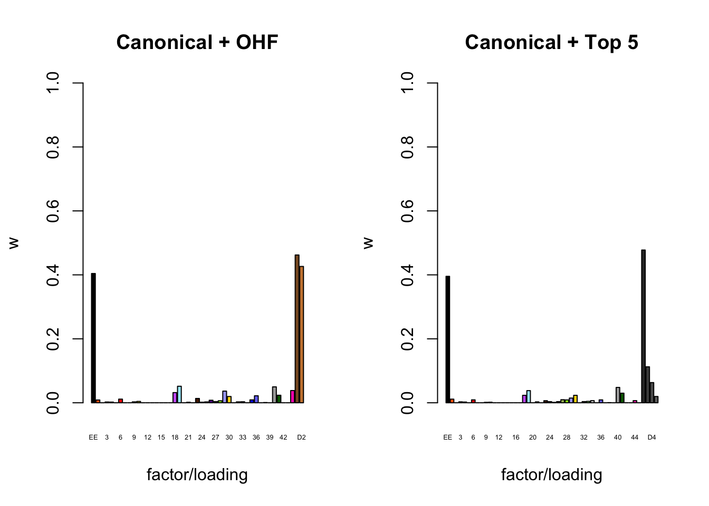
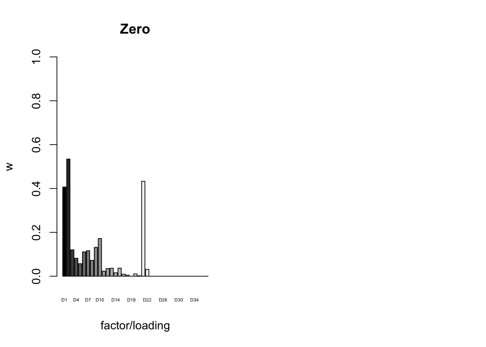
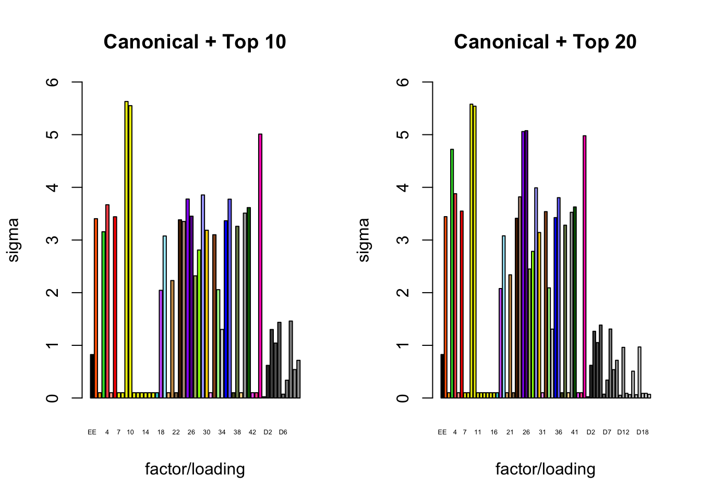
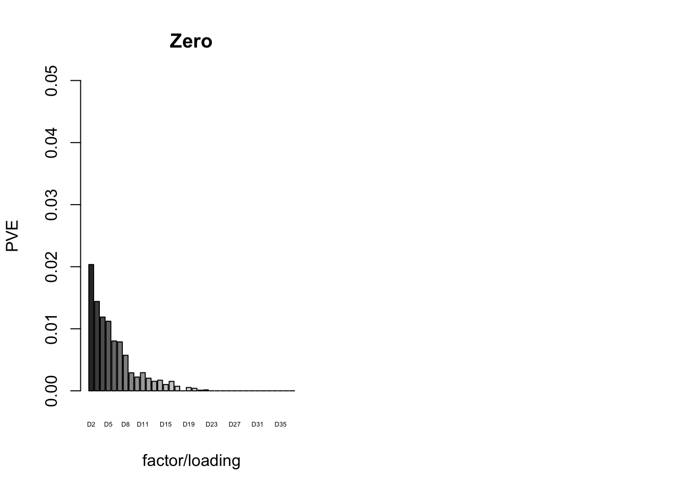

MASH v FLASH workflows for GTEx
Last updated: 2018-08-05
workflowr checks: (Click a bullet for more information)-
✔ R Markdown file: up-to-date
Great! Since the R Markdown file has been committed to the Git repository, you know the exact version of the code that produced these results.
-
✔ Environment: empty
Great job! The global environment was empty. Objects defined in the global environment can affect the analysis in your R Markdown file in unknown ways. For reproduciblity it’s best to always run the code in an empty environment.
-
✔ Seed:
set.seed(20180609)The command
set.seed(20180609)was run prior to running the code in the R Markdown file. Setting a seed ensures that any results that rely on randomness, e.g. subsampling or permutations, are reproducible. -
✔ Session information: recorded
Great job! Recording the operating system, R version, and package versions is critical for reproducibility.
-
Great! You are using Git for version control. Tracking code development and connecting the code version to the results is critical for reproducibility. The version displayed above was the version of the Git repository at the time these results were generated.✔ Repository version: 20c64ab
Note that you need to be careful to ensure that all relevant files for the analysis have been committed to Git prior to generating the results (you can usewflow_publishorwflow_git_commit). workflowr only checks the R Markdown file, but you know if there are other scripts or data files that it depends on. Below is the status of the Git repository when the results were generated:
Note that any generated files, e.g. HTML, png, CSS, etc., are not included in this status report because it is ok for generated content to have uncommitted changes.Ignored files: Ignored: .DS_Store Ignored: .Rhistory Ignored: .Rproj.user/ Ignored: data/ Ignored: docs/.DS_Store Ignored: docs/images/.DS_Store Ignored: docs/images/.Rapp.history Ignored: output/.DS_Store Ignored: output/.Rapp.history Ignored: output/MASHvFLASHgtex/.DS_Store Ignored: output/MASHvFLASHsims/.DS_Store Ignored: output/MASHvFLASHsims/backfit/.DS_Store Ignored: output/MASHvFLASHsims/backfit/.Rapp.history
Expand here to see past versions:
| File | Version | Author | Date | Message |
|---|---|---|---|---|
| Rmd | 20c64ab | Jason Willwerscheid | 2018-08-05 | wflow_publish(“analysis/MASHvFLASHgtex2.Rmd”) |
| html | c99babc | Jason Willwerscheid | 2018-08-02 | Build site. |
| Rmd | 942570e | Jason Willwerscheid | 2018-08-02 | wflow_publish(“analysis/MASHvFLASHgtex2.Rmd”) |
| html | 44d612a | Jason Willwerscheid | 2018-08-01 | Build site. |
| Rmd | eaefa15 | Jason Willwerscheid | 2018-08-01 | wflow_publish(“analysis/MASHvFLASHgtex2.Rmd”) |
| html | 25e0a6f | Jason Willwerscheid | 2018-08-01 | Build site. |
| Rmd | 36e6d62 | Jason Willwerscheid | 2018-08-01 | wflow_publish(“analysis/MASHvFLASHgtex2.Rmd”) |
| html | 76619ea | Jason Willwerscheid | 2018-07-22 | Build site. |
| Rmd | 30e7d23 | Jason Willwerscheid | 2018-07-22 | wflow_publish(c(“analysis/index.Rmd”, |
| html | 860aa52 | Jason Willwerscheid | 2018-07-22 | Build site. |
| Rmd | 3abd505 | Jason Willwerscheid | 2018-07-22 | wflow_publish(c(“analysis/MASHvFLASHsims.Rmd”, |
| html | 8720e9c | Jason Willwerscheid | 2018-07-01 | Build site. |
| Rmd | 1874a0d | Jason Willwerscheid | 2018-07-01 | wflow_publish(c(“analysis/MASHvFLASHgtex2.Rmd”, |
| html | ffbafca | Jason Willwerscheid | 2018-06-27 | Build site. |
| Rmd | eb90603 | Jason Willwerscheid | 2018-06-27 | wflow_publish(“analysis/MASHvFLASHgtex2.Rmd”) |
| html | 89b9e69 | Jason Willwerscheid | 2018-06-26 | Build site. |
| Rmd | 1ced908 | Jason Willwerscheid | 2018-06-26 | wflow_publish(“analysis/MASHvFLASHgtex2.Rmd”) |
Introduction
While I previously compared MASH and FLASH fits on strong tests only and on a random subset of tests, here I propose several workflows that are analogous to the one suggested for the GTEx data in this MASH vignette. For the code used in this analysis, see below.
Fitting Methods
For MASH, I follow the workflow in the vignette linked above, except that I assume that the null tests are uncorrelated (that is, I set \(V = I\)). This is almost certainly not the case, but some more work needs to be done before we can handle the case \(V \ne I\) in FLASH.
The workflows for FLASH proceed along similar lines to the workflow for MASH:
I obtain “data-driven” loadings (analogous to MASH’s data-driven covariance matrices) by fitting a FLASH object to the “strong” tests using either the “OHF” method or the “Zero” method described in my simulation study.
I fix the loadings obtained in step 1 at their expectation \(EL\) and add them as fixed data-driven loadings to a FLASH object. Further, I add 45 fixed “canonical” loadings (a vector of all ones and a one-hot vector for each of 44 conditions), which can be viewed as analogous to MASH’s canonical covariance matrices. (See the discussion in my vignette.) Since the “Zero” method generates many more data-driven loadings than the “OHF” method, I experiment with only keeping a subset of the data-driven loadings from the “Zero” method.
With the loadings fixed, I backfit a FLASH object to the random subset of tests to obtain priors \(g_f\) on the factors. I use the random subset rather than the “strong” subset because I want the priors to hold generally, and not just for the strong tests.
Finally, using the same fixed loadings as in step 2 and fixing the priors \(g_f\) at the values obtained in step 3, I backfit a FLASH object to the strong tests to get posterior means and variances.
I fit five FLASH objects, using five variations of the above workflow:
methods <- data.frame(fit = as.character(1:5),
data.driven = c("OHF", "Zero (top 5)",
"Zero (top 10)", "Zero (top 20)",
"Zero (full)"),
include.canonical = c(rep("Yes", 4), "No"))
knitr::kable(methods)| fit | data.driven | include.canonical |
|---|---|---|
| 1 | OHF | Yes |
| 2 | Zero (top 5) | Yes |
| 3 | Zero (top 10) | Yes |
| 4 | Zero (top 20) | Yes |
| 5 | Zero (full) | No |
Comments on FLASH fits
devtools::load_all("/Users/willwerscheid/GitHub/flashr/")Loading flashrfl_final <- list()
fl_final[[1]] <- readRDS(paste0(fpath, "OHF.rds"))
fl_final[[2]] <- readRDS(paste0(fpath, "top5.rds"))
fl_final[[3]] <- readRDS(paste0(fpath, "top10.rds"))
fl_final[[4]] <- readRDS(paste0(fpath, "top20.rds"))
fl_final[[5]] <- readRDS(paste0(fpath, "zero.rds"))Data-driven loadings (step 1)
OHF
14.3 minutes were required to backfit the 45 canonical loadings and then greedily obtain 2 additional factor/loading pairs using the “OHF” method. The loadings thus obtained are plotted below. Clearly, they are not as “nice” (sparse, interpretable) as many of the factor/loading pairs obtained using the “Zero” method.
To understand what’s happening, I want to pause to re-consider how the OHF method works. First, OHF backfits the canonical loadings. At this stage, the effect estimates have a simple interpretation: for each test, the effect in each condition is shrunken towards the mean effect (or rather, a shrunken estimate of the mean). This shrinkage is performed as if the deviations from the mean were independent. Second, data-driven loadings are greedily fitted to the residuals obtained from the backfit. These loadings will capture covariance structures that are more complex than the simple dependency structure captured by the canonical loadings (that is, dependence via the mean).
I believe that the first data-driven loading (#46) is capturing two (or more) separate dependency structures. Clearly, it is capturing covariance among brain tissues. But notice also that the tissues that are negatively loaded are the same tissues that have large weights in the MASH “ED_tPCA” structure depicted above. Further, notice that the non-brain tissues that are positively loaded are anti-correlated with brain tissues according to the second data-driven loading (#47). Thus, a linear combination of #46 and #47 might yield a covariance structure that captures positive correlation among brain tissues alone (which is more or less what is described by the MASH “ED_PCA_2” structure illustrated above).
In brief, I think that the dependencies implied by the OHF method are not so different from those implied by MASH as might at first appear. I think that this similarity could be further explored by placing non-negativity constraints on the loadings, which I intend to do in a future analysis.
missing.tissues <- c(7, 8, 19, 20, 24, 25, 31, 34, 37)
gtex.colors <- read.table("https://github.com/stephenslab/gtexresults/blob/master/data/GTExColors.txt?raw=TRUE", sep = '\t', comment.char = '')[-missing.tissues, 2]
par(mar=c(1,1,1,1))
par(mfrow=c(2,1))
for (i in 46:47) {
barplot(fl_final[[1]]$EL[, i], main=paste('Loading', i), las=2,
cex.names = 0.4, col=as.character(gtex.colors), names="")
}Expand here to see past versions of dd.OHF-1.png:
| Version | Author | Date |
|---|---|---|
| 25e0a6f | Jason Willwerscheid | 2018-08-01 |
Zero
6.3 minutes were required to greedily add 37 factor/loading pairs using the “Zero” method. To view plots of the loadings, scroll down to the “FLASH loadings” section below. Note in particular that most of the loadings beyond the first 16 or so are strongly loaded on a single condition. This observation motivated my desire to discard the majority of data-driven loadings. I reasoned that retaining only the “top” data-driven loadings would cut down on the time needed to backfit but would not change the final fit very much.
Priors on factors (steps 2-3)
The times needed to fit priors to the random subset of tests were as follows.
t <- readRDS(paste0(fpath, "t.rds"))
t_random <- data.frame(fit = as.character(1:5),
fixed.loadings = c("Canonical + OHF", "Canonical + Top 5 Zero", "Canonical + Top 10 Zero", "Canonical + Top 20 Zero", "Zero only"),
number.of.factors = sapply(fl_final, function(x) {flash_get_nfactors(x)}),
minutes.to.fit = sapply(t$random, function(x) {as.numeric(x, units="mins")})
)
knitr::kable(t_random, digits=1)| fit | fixed.loadings | number.of.factors | minutes.to.fit |
|---|---|---|---|
| 1 | Canonical + OHF | 47 | 3.0 |
| 2 | Canonical + Top 5 Zero | 50 | 8.5 |
| 3 | Canonical + Top 10 Zero | 55 | 17.6 |
| 4 | Canonical + Top 20 Zero | 65 | 17.0 |
| 5 | Zero only | 37 | 0.9 |
To inspect the fitted priors \(g_f \sim (1 - w_f) \delta_0 + w_f N(0, \sigma^2_f)\), I plot the \(w_f\)s (that is, the proportion of genes that we expect to have nonnull loadings for each factor/loading pair). The “equal effects” factor is colored black, while the “unique effects” factors are colored with the GTEx colors used in the factor plots above. The data-driven factors are colored brown (OHF) or in grayscale (Zero).
par(mfrow = c(1, 2))
plot_gf.w <- function(fl, names, colors, main) {
w <- 1 - sapply(fl$gf, function(g) {g$pi0})
barplot(w, ylim=c(0, 1), ylab="w", xlab="factor/loading",
cex.names=0.4, names=names, col=colors, main=main)
}
canonical.names <- c("EE", as.character(1:44))
canonical.colors <- c("black", as.character(gtex.colors))
OHF.colors <- c("tan4", "tan3")
zero.colors <- c("black", gray.colors(19, 0.2, 0.9),
gray.colors(17, 0.95, 1))
plot_gf.w(fl_final[[1]],
c(canonical.names, paste0("D", 1:2)),
c(canonical.colors, OHF.colors),
main="Canonical + OHF")
plot_gf.w(fl_final[[2]],
c(canonical.names, paste0("D", 1:5)),
c(canonical.colors, zero.colors[1:5]),
main="Canonical + Top 5")
Expand here to see past versions of plot_w-1.png:
| Version | Author | Date |
|---|---|---|
| c99babc | Jason Willwerscheid | 2018-08-02 |
| 25e0a6f | Jason Willwerscheid | 2018-08-01 |
plot_gf.w(fl_final[[3]],
c(canonical.names, paste0("D", 1:10)),
c(canonical.colors, zero.colors[1:10]),
main="Canonical + Top 10")
plot_gf.w(fl_final[[4]],
c(canonical.names, paste0("D", 1:20)),
c(canonical.colors, zero.colors[1:20]),
main="Canonical + Top 20")Expand here to see past versions of plot_w-2.png:
| Version | Author | Date |
|---|---|---|
| c99babc | Jason Willwerscheid | 2018-08-02 |
| 25e0a6f | Jason Willwerscheid | 2018-08-01 |
plot_gf.w(fl_final[[5]],
paste0("D", 1:37),
zero.colors,
main="Zero")
Expand here to see past versions of plot_w-3.png:
| Version | Author | Date |
|---|---|---|
| c99babc | Jason Willwerscheid | 2018-08-02 |
| 25e0a6f | Jason Willwerscheid | 2018-08-01 |
It is also instructive to plot the \(\sigma_f\)s, normalized so that the \(\ell_\infty\)-norm for each loading is equal to one. These plots roughly describe how large we can expect non-null identical and unique effects to be. Note in particular that the “unique effects” loadings capture rare but large effects, whereas the data-driven loadings capture smaller but more common effects.
par(mfrow = c(1, 2))
plot_gf.s <- function(fl, names, colors, main) {
nrm <- apply(abs(fl$EL), 2, max)
s <- sqrt(1 / sapply(fl$gf, function(g) {g$a})) * nrm
barplot(s, ylim=c(0, 6), ylab="sigma", xlab="factor/loading",
cex.names=0.4, names=names, col=colors, main=main)
}
plot_gf.s(fl_final[[1]],
c(canonical.names, paste0("D", 1:2)),
c(canonical.colors, OHF.colors),
main="Canonical + OHF")
plot_gf.s(fl_final[[2]],
c(canonical.names, paste0("D", 1:5)),
c(canonical.colors, zero.colors[1:5]),
main="Canonical + Top 5")Expand here to see past versions of plot_s-1.png:
| Version | Author | Date |
|---|---|---|
| c99babc | Jason Willwerscheid | 2018-08-02 |
| 25e0a6f | Jason Willwerscheid | 2018-08-01 |
plot_gf.s(fl_final[[3]],
c(canonical.names, paste0("D", 1:10)),
c(canonical.colors, zero.colors[1:10]),
main="Canonical + Top 10")
plot_gf.s(fl_final[[4]],
c(canonical.names, paste0("D", 1:20)),
c(canonical.colors, zero.colors[1:20]),
main="Canonical + Top 20")
Expand here to see past versions of plot_s-2.png:
| Version | Author | Date |
|---|---|---|
| c99babc | Jason Willwerscheid | 2018-08-02 |
| 25e0a6f | Jason Willwerscheid | 2018-08-01 |
plot_gf.s(fl_final[[5]],
paste0("D", 1:37),
zero.colors,
main="Zero")Expand here to see past versions of plot_s-3.png:
| Version | Author | Date |
|---|---|---|
| c99babc | Jason Willwerscheid | 2018-08-02 |
Final backfit (step 4)
The times needed for the final backfits (with loadings and priors \(g_f\) fixed at values determined during steps 1-3) were as follows.
t_final <- data.frame(fit = as.character(1:5),
fixed.loadings = c("Canonical + OHF", "Canonical + Top 5 Zero", "Canonical + Top 10 Zero", "Canonical + Top 20 Zero", "Zero only"),
number.of.factors = sapply(fl_final, function(x) {flash_get_nfactors(x)}),
minutes.to.fit = sapply(t$final, function(x) {as.numeric(x, units="mins")})
)
knitr::kable(t_final, digits=1)| fit | fixed.loadings | number.of.factors | minutes.to.fit |
|---|---|---|---|
| 1 | Canonical + OHF | 47 | 4.9 |
| 2 | Canonical + Top 5 Zero | 50 | 14.4 |
| 3 | Canonical + Top 10 Zero | 55 | 17.8 |
| 4 | Canonical + Top 20 Zero | 65 | 34.8 |
| 5 | Zero only | 37 | 0.4 |
The proportion of variance explained per factor/loading pair is as follows. Since, in each case, the “equal effects” factor/loading pair constitutes by far the largest proportion of variance explained (around 0.7), I only plot the PVE for the other factor/loading pairs.
par(mfrow = c(1, 2))
plot_pve <- function(fl, names, colors, main) {
pve <- flash_get_pve(fl)
barplot(pve[2:length(pve)], ylim=c(0, .05), ylab="PVE",
xlab="factor/loading", cex.names=0.4,
names=names, col=colors, main=main)
}
canonical.names <- as.character(1:44)
canonical.colors <- canonical.colors[2:45]
plot_pve(fl_final[[1]],
c(canonical.names, paste0("D", 1:2)),
c(canonical.colors, OHF.colors),
main="Canonical + OHF")
plot_pve(fl_final[[2]],
c(canonical.names, paste0("D", 1:5)),
c(canonical.colors, zero.colors[1:5]),
main="Canonical + Top 5")Expand here to see past versions of pve-1.png:
| Version | Author | Date |
|---|---|---|
| c99babc | Jason Willwerscheid | 2018-08-02 |
| 25e0a6f | Jason Willwerscheid | 2018-08-01 |
plot_pve(fl_final[[3]],
c(canonical.names, paste0("D", 1:10)),
c(canonical.colors, zero.colors[1:10]),
main="Canonical + Top 10")
plot_pve(fl_final[[4]],
c(canonical.names, paste0("D", 1:20)),
c(canonical.colors, zero.colors[1:20]),
main="Canonical + Top 20")
Expand here to see past versions of pve-2.png:
| Version | Author | Date |
|---|---|---|
| c99babc | Jason Willwerscheid | 2018-08-02 |
| 25e0a6f | Jason Willwerscheid | 2018-08-01 |
plot_pve(fl_final[[5]],
paste0("D", 2:37),
zero.colors[2:37],
main="Zero")
Total fitting time
The total time needed for each workflow is as follows.
fl_t <- (t_random$minutes.to.fit + t_final$minutes.to.fit
+ c(t$strong$OHF, t$strong$zero * c(5, 10, 20, 37) / 37))
total_time <- data.frame(method = c("OHF", "Top 5", "Top 10",
"Top 20", "Zero", "MASH"),
total.time.to.fit = c(fl_t, 5.3))
knitr::kable(total_time, digits=1)| method | total.time.to.fit |
|---|---|
| OHF | 22.2 mins |
| Top 5 | 23.8 mins |
| Top 10 | 37.1 mins |
| Top 20 | 55.2 mins |
| Zero | 7.5 mins |
| MASH | 5.3 mins |
MASH v FLASH initial observations
There is substantial disagreement among fits. The correlation matrix for posterior means is as follows.
all_fitted <- sapply(fl_final, flash_get_fitted_values)
all_fitted <- cbind(all_fitted, as.vector(t(get_pm(m_final))))
colnames(all_fitted) <- c("OHF", "Top 5", "Top 10",
"Top 20", "Zero", "MASH")
round(cor(all_fitted), digits=3) OHF Top 5 Top 10 Top 20 Zero MASH
OHF 1.000 0.984 0.983 0.983 0.971 0.966
Top 5 0.984 1.000 0.995 0.994 0.966 0.961
Top 10 0.983 0.995 1.000 0.999 0.968 0.963
Top 20 0.983 0.994 0.999 1.000 0.969 0.963
Zero 0.971 0.966 0.968 0.969 1.000 0.979
MASH 0.966 0.961 0.963 0.963 0.979 1.000Entry \((i, j)\) in the following matrix gives, of the values that method \(j\) finds to be significant at 5%, the proportion of values that method \(i\) also finds to be significant at 5%. For example, of the values that MASH finds to be significant, OHF also finds 90% to be significant. But of the values that OHF finds to be significant, MASH only agrees in 81% of cases.
fl_lfsr <- readRDS(paste0(fpath, "fllfsr.rds"))
all_signif <- sapply(fl_lfsr, function(x) {as.numeric(x <= 0.05)})
all_signif <- cbind(all_signif, as.vector(t(get_lfsr(m_final) <= 0.05)))
m <- ncol(all_signif)
agree_mat <- matrix(0, nrow=m, ncol=m)
for (i in 1:m) {
for (j in 1:m) {
agree_mat[i, j] <- (sum(all_signif[, i] * all_signif[, j]) /
sum(all_signif[, j]))
}
}
rownames(agree_mat) <- colnames(agree_mat) <- colnames(all_fitted)
round(agree_mat, digits=2) OHF Top 5 Top 10 Top 20 Zero MASH
OHF 1.00 0.93 0.92 0.92 0.90 0.90
Top 5 0.93 1.00 0.96 0.96 0.92 0.92
Top 10 0.92 0.96 1.00 0.98 0.93 0.92
Top 20 0.92 0.95 0.97 1.00 0.93 0.91
Zero 0.89 0.91 0.92 0.92 1.00 0.91
MASH 0.81 0.83 0.83 0.83 0.83 1.00I will offer some explanations for the differences among fits in subsequent analyses.
FLASH loadings
The FLASH loadings (as fitted on the strong tests) are as follows.
par(mar=c(1,1,1,1))
par(mfrow=c(3,2))
for(i in 1:flash_get_nfactors(fl_final[[5]])){
barplot(fl_final[[5]]$EL[, i], main=paste('Loading', i), las=2,
cex.names = 0.4, col=as.character(gtex.colors), names="")
}
Expand here to see past versions of flash_factors-1.png:
| Version | Author | Date |
|---|---|---|
| 25e0a6f | Jason Willwerscheid | 2018-08-01 |
| 860aa52 | Jason Willwerscheid | 2018-07-22 |
| 89b9e69 | Jason Willwerscheid | 2018-06-26 |
Expand here to see past versions of flash_factors-2.png:
| Version | Author | Date |
|---|---|---|
| 25e0a6f | Jason Willwerscheid | 2018-08-01 |
| 860aa52 | Jason Willwerscheid | 2018-07-22 |
| 89b9e69 | Jason Willwerscheid | 2018-06-26 |
Expand here to see past versions of flash_factors-3.png:
| Version | Author | Date |
|---|---|---|
| 25e0a6f | Jason Willwerscheid | 2018-08-01 |
| 860aa52 | Jason Willwerscheid | 2018-07-22 |
| 89b9e69 | Jason Willwerscheid | 2018-06-26 |
Expand here to see past versions of flash_factors-4.png:
| Version | Author | Date |
|---|---|---|
| 25e0a6f | Jason Willwerscheid | 2018-08-01 |
| 860aa52 | Jason Willwerscheid | 2018-07-22 |
| 89b9e69 | Jason Willwerscheid | 2018-06-26 |

Expand here to see past versions of flash_factors-5.png:
| Version | Author | Date |
|---|---|---|
| 25e0a6f | Jason Willwerscheid | 2018-08-01 |
| 860aa52 | Jason Willwerscheid | 2018-07-22 |
| 89b9e69 | Jason Willwerscheid | 2018-06-26 |

Expand here to see past versions of flash_factors-6.png:
| Version | Author | Date |
|---|---|---|
| 25e0a6f | Jason Willwerscheid | 2018-08-01 |
Expand here to see past versions of flash_factors-7.png:
| Version | Author | Date |
|---|---|---|
| 25e0a6f | Jason Willwerscheid | 2018-08-01 |
Code
Click “Code” to view the code used to obtain the above results.
# Make sure to use branch "trackObj" when loading flashr.
# devtools::install_github("stephenslab/flashr", ref="trackObj")
devtools::load_all("/Users/willwerscheid/GitHub/flashr/")
# devtools::install_github("stephenslab/ebnm")
devtools::load_all("/Users/willwerscheid/GitHub/ebnm/")
library(mashr)
source("./code/fits.R")
source("./code/utils.R")
fpath <- "./output/MASHvFLASHgtex2/"
gtex <- readRDS(gzcon(url("https://github.com/stephenslab/gtexresults/blob/master/data/MatrixEQTLSumStats.Portable.Z.rds?raw=TRUE")))
strong <- t(gtex$strong.z)
random <- t(gtex$random.z)
# FLASH fits ------------------------------------------------------------
strong_data <- flash_set_data(strong, S = 1)
random_data <- flash_set_data(random, S = 1)
# methods to get DD: OHF; Zero(top5, top10, top20, full)
# LLs to use: canonical + OHF; Zero; canonical + top5/top10/top15; full
# Step 1. Learn data-driven loadings using strong tests.
t0 <- Sys.time()
fl_strong.OHF <- fit_flash_OHF(strong_data, Kmax=50, backfit=FALSE)
t_strong.OHF <- Sys.time() - t0
t0 <- Sys.time()
fl_strong.zero <- fit_flash_zero(strong_data, Kmax=50, backfit=FALSE)
t_strong.zero <- Sys.time() - t0
# Step 2. Fit the model to random tests to learn priors on factors.
LL <- list()
LL[[1]] <- fl_strong.OHF$f$EL
n <- nrow(strong)
canonical <- cbind(rep(1, n), diag(rep(1, n)))
LL[[2]] <- cbind(canonical, fl_strong.zero$f$EL[, 1:5])
LL[[3]] <- cbind(canonical, fl_strong.zero$f$EL[, 1:10])
LL[[4]] <- cbind(canonical, fl_strong.zero$f$EL[, 1:20])
LL[[5]] <- fl_strong.zero$f$EL
fl_random <- list()
t_random <- list()
for (i in 1:length(LL)) {
t0 <- Sys.time()
fl <- flash_add_fixed_l(random_data, LL[[i]])
fl <- flash_backfit(random_data,
fl,
var_type="zero",
ebnm_fn = "ebnm_pn",
nullcheck = FALSE,
warmstart = TRUE,
verbose = TRUE)
t_random[[i]] <- Sys.time() - t0
fl_random[[i]] <- fl$f
}
# Step 3. Compute posteriors on strong tests, using priors from step 2.
fl_final <- list()
t_final <- list()
for (i in 1:length(LL)) {
t0 <- Sys.time()
fl <- flash_add_fixed_l(strong_data, LL[[i]])
ebnm_param_f = lapply(fl_random[[i]]$gf, function(g) {list(g=g, fixg=TRUE)})
fl <- flash_backfit(strong_data,
fl,
var_type="zero",
ebnm_fn = "ebnm_pn",
ebnm_param = list(f = ebnm_param_f, l = list()),
nullcheck = FALSE,
verbose = TRUE)
t_final[[i]] <- Sys.time() - t0
fl_final[[i]] <- fl$f
}
saveRDS(fl_final[[1]], paste0(fpath, "OHF.rds"))
saveRDS(fl_final[[2]], paste0(fpath, "top5.rds"))
saveRDS(fl_final[[3]], paste0(fpath, "top10.rds"))
saveRDS(fl_final[[4]], paste0(fpath, "top20.rds"))
saveRDS(fl_final[[5]], paste0(fpath, "zero.rds"))
t <- list()
t$strong <- list()
t$strong$OHF <- t_strong.OHF
t$strong$zero <- t_strong.zero
t$random <- t_random
t$final <- t_final
# Sample from posterior to get LFSR for FLASH fits ----------------------
nsamp <- 200
fl_lfsr <- list()
for (i in 1:length(fl_final)) {
sampler <- flash_sampler(strong_data, fl_final[[i]], fixed="loadings")
samp <- sampler(200)
fl_lfsr[[i]] <- flash_lfsr(samp)
}
saveRDS(fl_lfsr, paste0(fpath, "fllfsr.rds"))
# MASH fit --------------------------------------------------------------
strong_data <- mash_set_data(t(strong), Shat = 1)
random_data <- mash_set_data(t(random), Shat = 1)
t$mash <- list()
# Step 1. Learn data-driven loadings using strong tests.
t0 <- Sys.time()
U.pca <- cov_pca(strong_data, 5)
U.ed <- cov_ed(strong_data, U.pca)
t$mash$ed <- Sys.time() - t0
# 2. Fit the model to random tests to learn mixture weights
t0 <- Sys.time()
U.c <- cov_canonical(random_data)
m_random <- mash(random_data, Ulist = c(U.ed,U.c))
t$mash$random <- Sys.time() - t0
# 3. Compute posterior summaries on the strong tests
t0 <- Sys.time()
m_final <- mash(strong_data, g=get_fitted_g(m_random), fixg=TRUE)
t$mash$final <- Sys.time() - t0
saveRDS(m_final, paste0(fpath, "m.rds"))
saveRDS(t, paste0(fpath, "t.rds"))Session information
sessionInfo()R version 3.4.3 (2017-11-30)
Platform: x86_64-apple-darwin15.6.0 (64-bit)
Running under: macOS High Sierra 10.13.6
Matrix products: default
BLAS: /Library/Frameworks/R.framework/Versions/3.4/Resources/lib/libRblas.0.dylib
LAPACK: /Library/Frameworks/R.framework/Versions/3.4/Resources/lib/libRlapack.dylib
locale:
[1] en_US.UTF-8/en_US.UTF-8/en_US.UTF-8/C/en_US.UTF-8/en_US.UTF-8
attached base packages:
[1] stats graphics grDevices utils datasets methods base
other attached packages:
[1] flashr_0.5-13 corrplot_0.84 mashr_0.2-7 ashr_2.2-10
loaded via a namespace (and not attached):
[1] Rcpp_0.12.17 pillar_1.2.1 compiler_3.4.3
[4] git2r_0.21.0 highr_0.6 plyr_1.8.4
[7] workflowr_1.0.1 R.methodsS3_1.7.1 R.utils_2.6.0
[10] iterators_1.0.9 tools_3.4.3 testthat_2.0.0
[13] digest_0.6.15 tibble_1.4.2 gtable_0.2.0
[16] evaluate_0.10.1 memoise_1.1.0 lattice_0.20-35
[19] rlang_0.2.0 Matrix_1.2-12 foreach_1.4.4
[22] commonmark_1.4 yaml_2.1.17 parallel_3.4.3
[25] ebnm_0.1-12 mvtnorm_1.0-7 xml2_1.2.0
[28] roxygen2_6.0.1.9000 withr_2.1.1.9000 stringr_1.3.0
[31] knitr_1.20 devtools_1.13.4 rprojroot_1.3-2
[34] grid_3.4.3 R6_2.2.2 rmarkdown_1.8
[37] rmeta_3.0 ggplot2_2.2.1 magrittr_1.5
[40] whisker_0.3-2 scales_0.5.0 backports_1.1.2
[43] codetools_0.2-15 htmltools_0.3.6 MASS_7.3-48
[46] assertthat_0.2.0 softImpute_1.4 colorspace_1.3-2
[49] stringi_1.1.6 lazyeval_0.2.1 munsell_0.4.3
[52] doParallel_1.0.11 pscl_1.5.2 truncnorm_1.0-8
[55] SQUAREM_2017.10-1 R.oo_1.21.0 This reproducible R Markdown analysis was created with workflowr 1.0.1
Comments on MASH fit
It took 2.4 minutes to run Extreme Deconvolution to find data-driven covariance matrices. The MASH fit on the random subset of tests (to determine mixture weights) required 2.7 minutes, and the final MASH fit on the strong tests required only 16 seconds. The total fitting time was 5.3 minutes.
The estimated mixture weights were as follows. Note in particular that there are large weights on the data-driven matrices “ED_tPCA” and “ED_PCA_2,” as well as on the canonical “equal_effects” matrix. There are moderate weights on the null matrix, some unique effects (including testis, thyroid, and transformed fibroblasts), and two of the canonical “simple_het” matrices (where effect sizes are assumed to be of equal variance and equally correlated, with correlation coefficients of, respectively, 0.25 and 0.5).
Expand here to see past versions of mixwts-1.png:
Correlation plots for the data-driven matrices are as follows. The first (“ED_tPCA”) describes effects that are shared across a handful of tissues (which, notably, does not include brain tissues).
Expand here to see past versions of corr-1.png:
The second (“ED_PCA_2”) describes a pattern of sharing among brain tissues that is, interestingly, strongly anti-correlated with whole blood.
Expand here to see past versions of corr2-1.png: